Agent tools & evaluations
This module is delivered in the Foundry portal. Where the original steps mention a pre-provisioned shared environment, a .env file, an organizer, or a proctor, use your own Foundry project and the model you deployed in Module 01.
In this module you extend acl-remedy-advisor with a second tool — Code Interpreter — refine its instructions so it routes work to the right tool, then run a no‑code evaluation in the Foundry portal to score the agent's quality. Everything here happens in the browser at ai.azure.com.
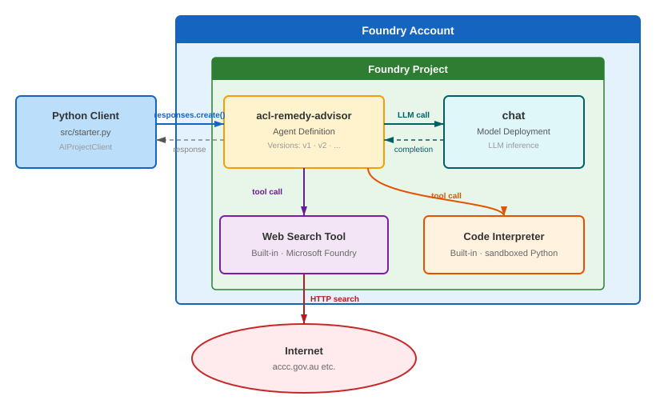
Tick the checkbox next to each step as you complete it. Your progress is saved in this browser and shown on the workshop overview.
Objectives
- Add the Code Interpreter tool to the agent for precise calculations.
- Update the instructions so the model knows when to use each tool.
- Run an automatic evaluation in the portal and read the per‑evaluator scores.
Concepts
Multiple tools and instruction routing
An agent can hold several tools at once. On each turn the model decides which — if any — to call, based on two things: the user's message and your instructions. Precise instructions ("use code interpreter to calculate refund amounts") make tool selection consistent and predictable, which also makes evaluation results more reliable.
Evaluations
An evaluation runs your agent against a set of test inputs and scores each response with one or more evaluators. The portal does this end‑to‑end in the cloud — it can even generate the test data for you. Evaluators relevant to a tool‑using agent include:
| Evaluator | Category | What it measures |
|---|---|---|
| Tool Call Accuracy | Agents | Did the agent call the right tool with the right arguments? |
| Task Adherence | Agents | Does the final response fully satisfy the request? |
| Intent Resolution | Agents | Did the agent's first actions match the user's intent? |
| Groundedness / Relevance | Quality | Is the answer grounded and on‑topic? |
| Safety (Violence, Self‑harm, …) | Safety | Does any response contain harmful content? |
Evaluators that use an LLM judge require a deployed chat model in your project (your Module 01 chat deployment is sufficient). Running evaluations consumes model quota.
Steps
Part 1 — Add Code Interpreter to the agent
-
In the Foundry portal, open Build → Agents and select acl-remedy-advisor.
-
In the Tools section (which already lists Web search from Module 04), click + Add tools.
-
Select Code Interpreter from the catalog and confirm to add it.
-
Confirm both Web search and Code Interpreter now appear in the agent's Tools section.
📸 Reference — the tool picker in the VS Code Agent Builder
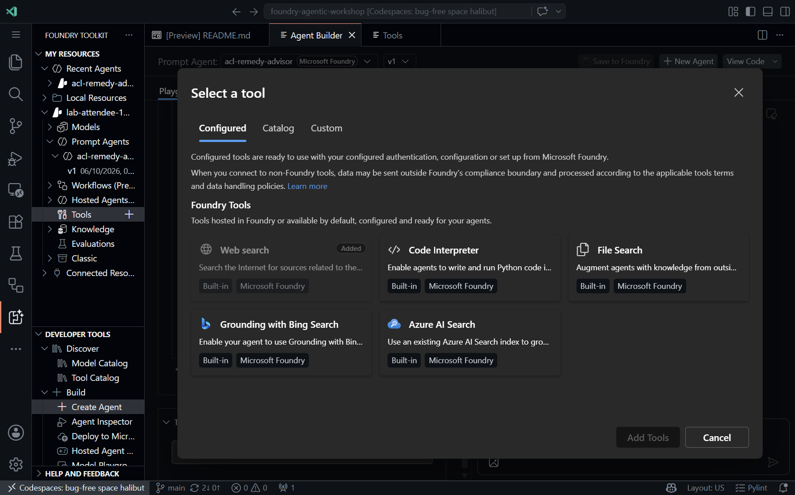
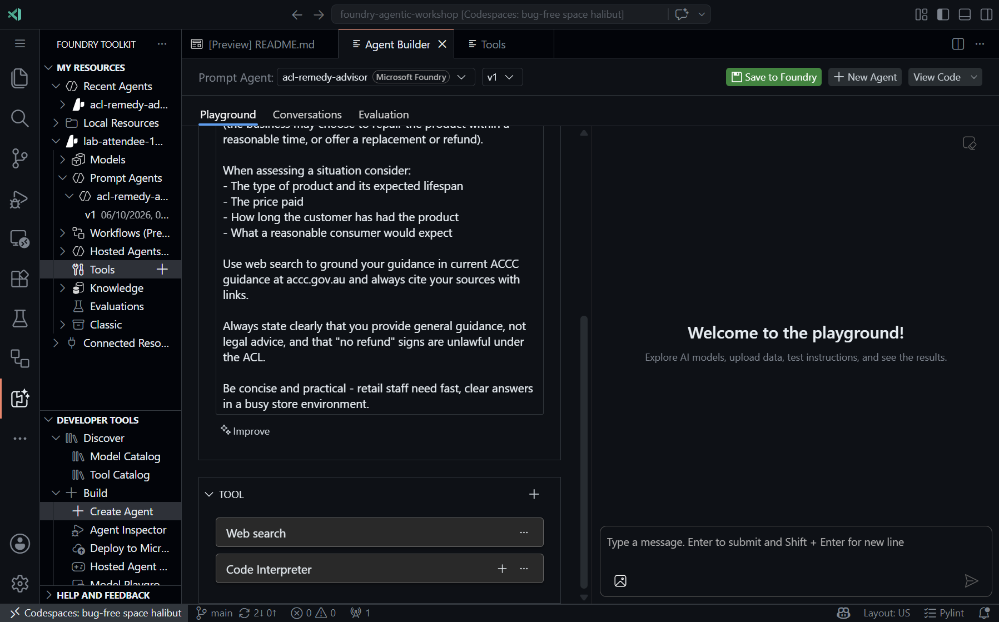
The portal catalog offers the same Code Interpreter tool. Code Interpreter runs sandboxed Python and is billed per active session.
Part 2 — Update the instructions
-
Scroll to the Instructions field and add this paragraph to the end of the existing instructions:
When asked to calculate refund amounts, depreciation, pro-rata warranty values, or compare prices, use code interpreter to perform the calculation precisely and show your working. -
Confirm the new paragraph appears at the bottom of the instructions.
Foundry records this change as a new agent version automatically (conceptually your v2). Earlier versions remain available, and anything referencing the agent by name uses the latest version.
Part 3 — Test both tools in the Playground
-
Open the Playground tab and send:
A customer bought a $899 laptop 14 months ago. The battery now only holds 20% of its original capacity after normal use. The manufacturer's warranty was 12 months. What are the customer's rights under Australian Consumer Law, and what would a reasonable refund amount be if they've had 14 months of use from a product expected to last at least 3 years?
-
Review the response. Confirm the agent classifies the failure, explains the remedy options, and cites current ACCC guidance.
The prompt is designed to trigger Web search for ACL guidance and Code Interpreter for the refund calculation. The model exercises judgement — if the calculation does not fire, iterate on the wording. Evaluation (next) gives you a repeatable way to measure this.
Part 4 — Run an automatic evaluation in the portal
-
With acl-remedy-advisor open, click the Evaluation tab, then click + Create.
📸 Screenshot: the Evaluation tab
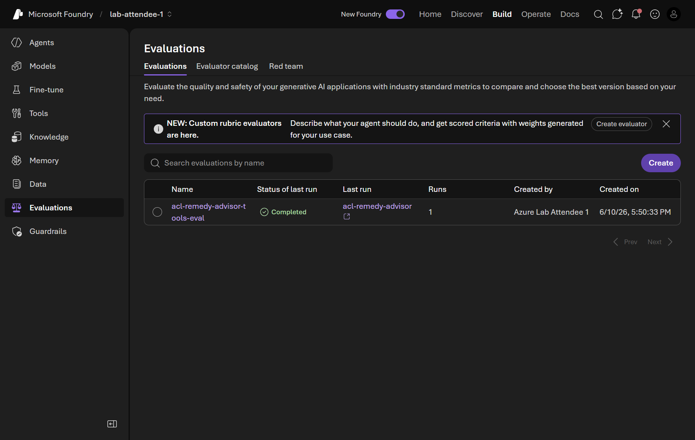
-
Step 1 — Target: keep Agent selected;
acl-remedy-advisoris pre‑checked. Click Next.📸 Screenshot: Step 1 Target
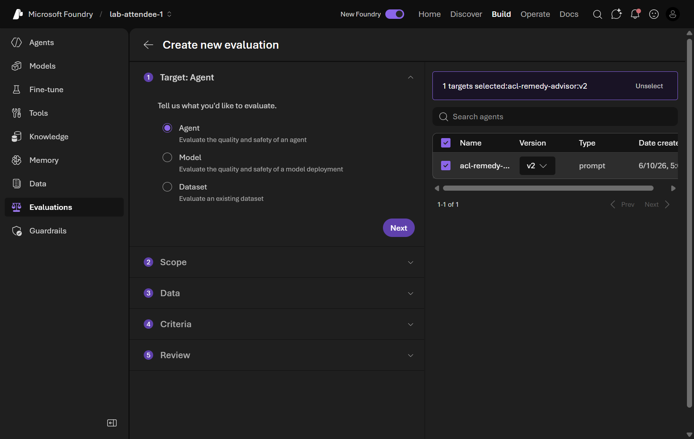
-
Step 2 — Scope: keep Individual turns selected (per‑turn tool‑accuracy scores are easy to read). Click Next.
📸 Screenshot: Step 2 Scope
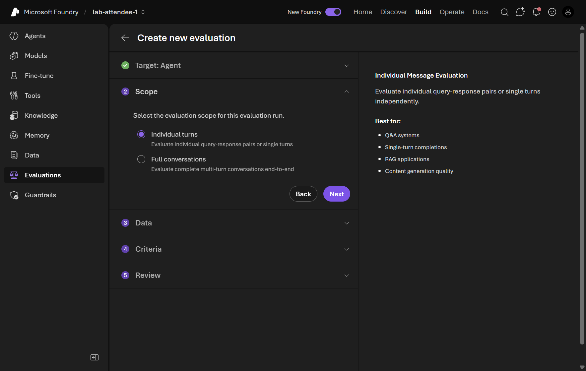
-
Step 3 — Data: keep Synthetic generation selected and click Generate. In the dialog, set Number of rows to 5, confirm the Model is your
chatdeployment, and paste this prompt:Generate questions a retail staff member might ask about Australian Consumer Law remedies for common product faults: faulty electronics, broken appliances, defective clothing, and expired warranties. Include at least one question requiring a refund calculation.Click Confirm, then Next.
📸 Screenshot: Step 3 Data (synthetic dataset)
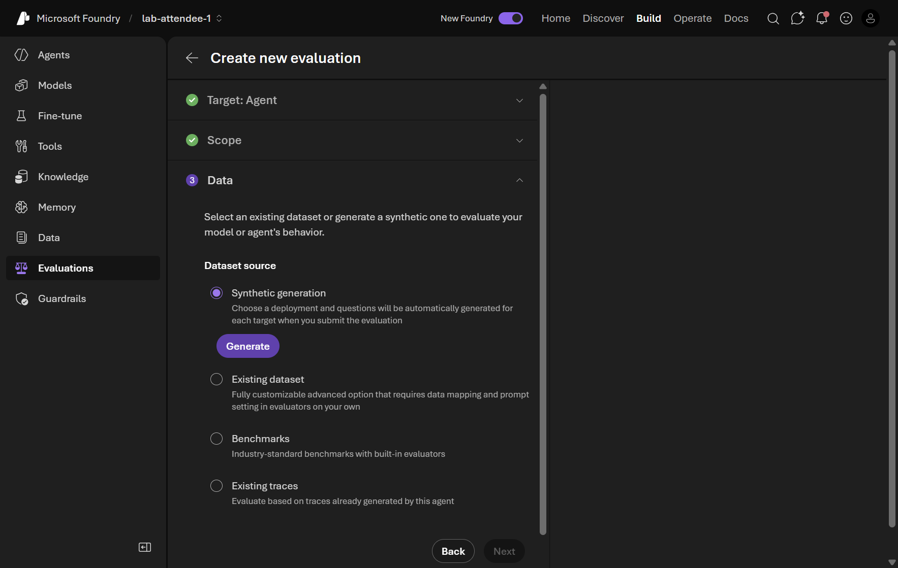
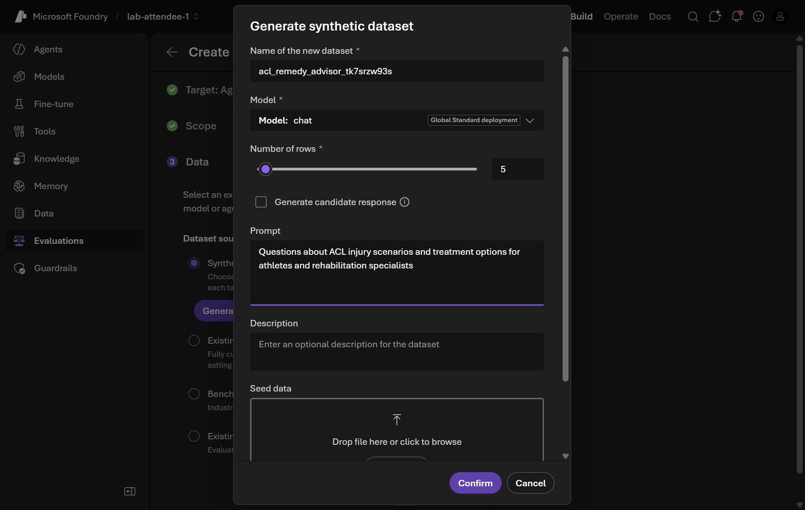
-
Step 4 — Criteria: the portal auto‑selects evaluators across Agents, Quality, and Safety, and maps the dataset fields for you. Leave the selection as suggested and click Next.
📸 Screenshot: Step 4 Criteria
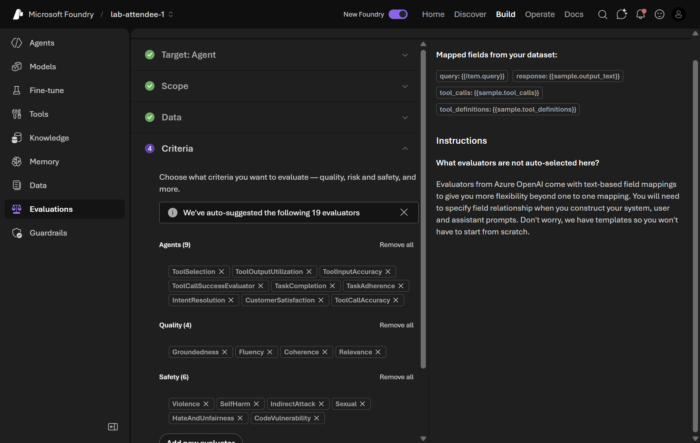
-
Step 5 — Review: name the evaluation
acl-remedy-advisor-tools-evaland click Submit.📸 Screenshot: Step 5 Review
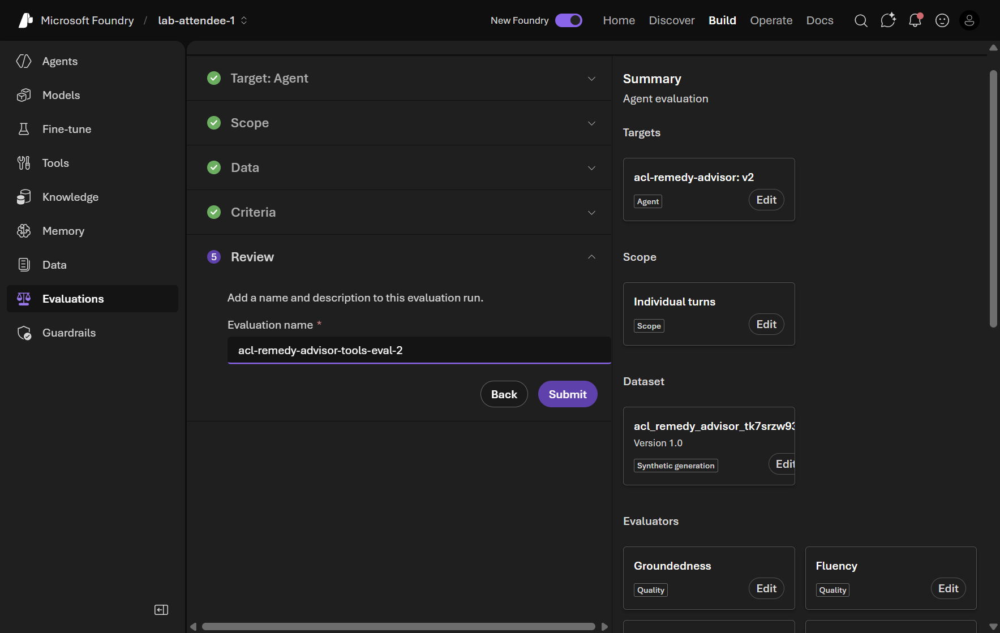
-
Wait for the run Status to reach Completed (a few minutes for 5 rows), then open the run to see per‑evaluator scores for each row.
📸 Screenshot: evaluation run and results
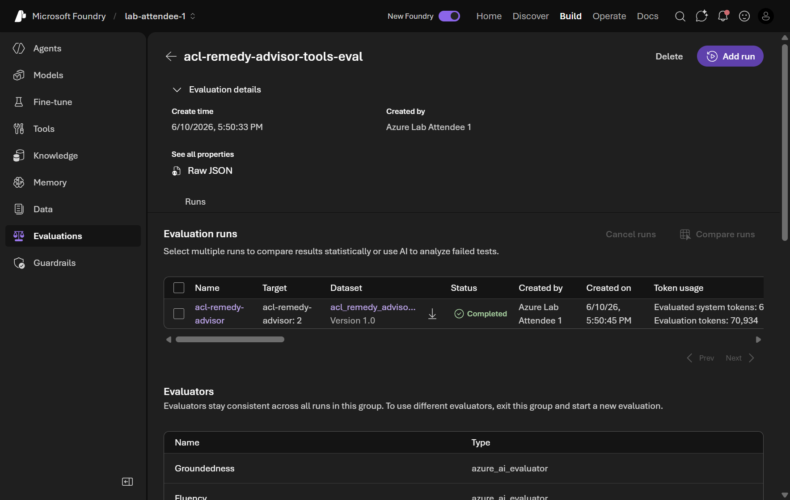
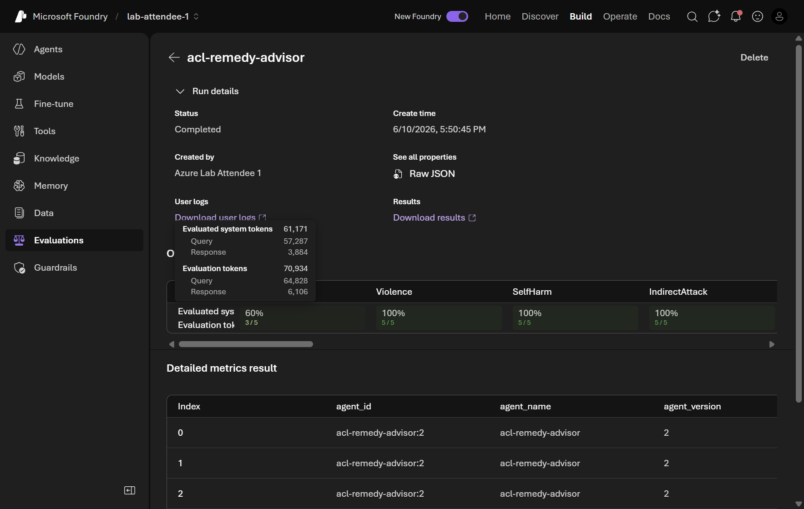
-
Look at ToolCallAccuracy and TaskAdherence (are scores consistently high?), any Safety flags, and any low Groundedness rows.
These scores are a baseline. After you change instructions or add tools, re‑run the same evaluation and compare — a higher ToolCallAccuracy means the agent is following your tool‑usage instructions more reliably.
Validation
-
acl-remedy-advisorhas both Web search and Code Interpreter attached. - The instructions include the Code Interpreter routing paragraph.
- An evaluation named
acl-remedy-advisor-tools-evalshows Completed with per‑evaluator scores.
pytest-agent-evals suite you can run in a pipeline. Open Module 05 on GitHub →